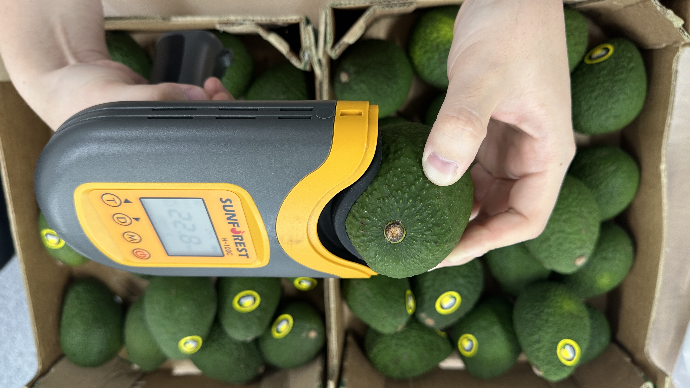
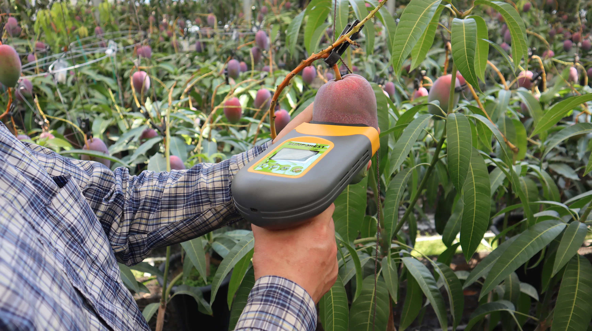
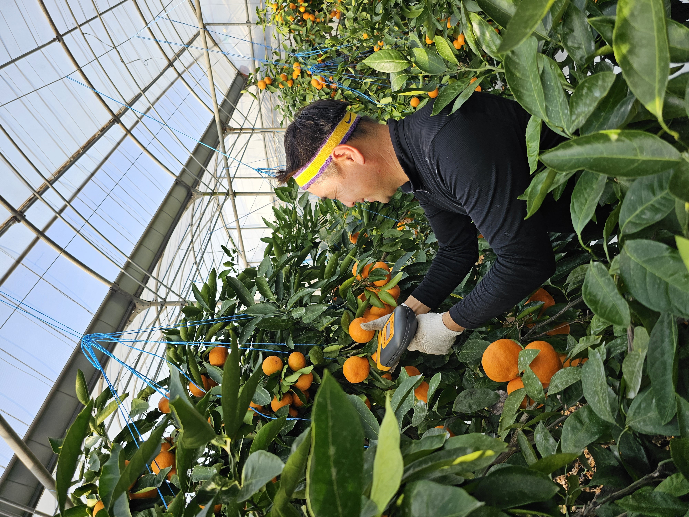
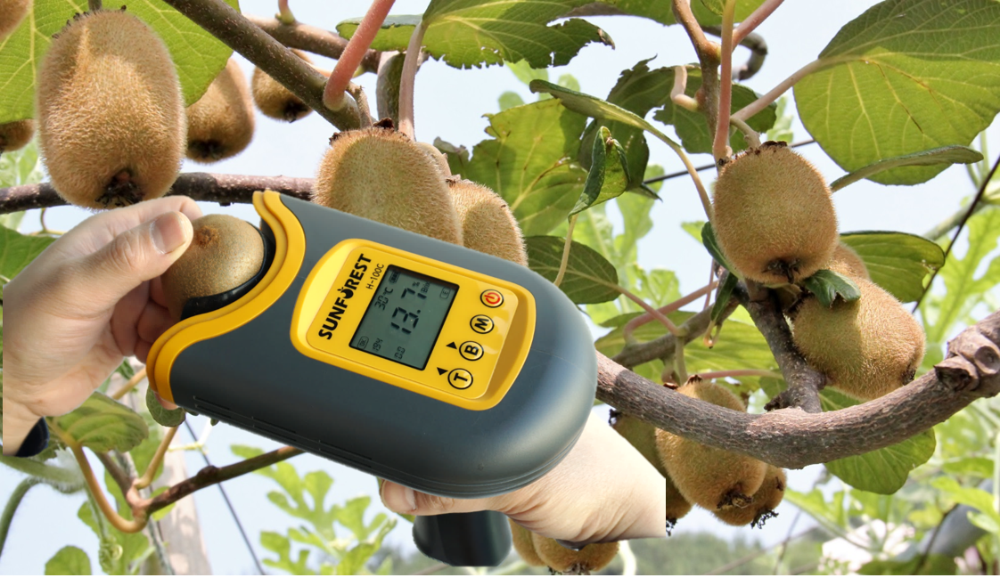
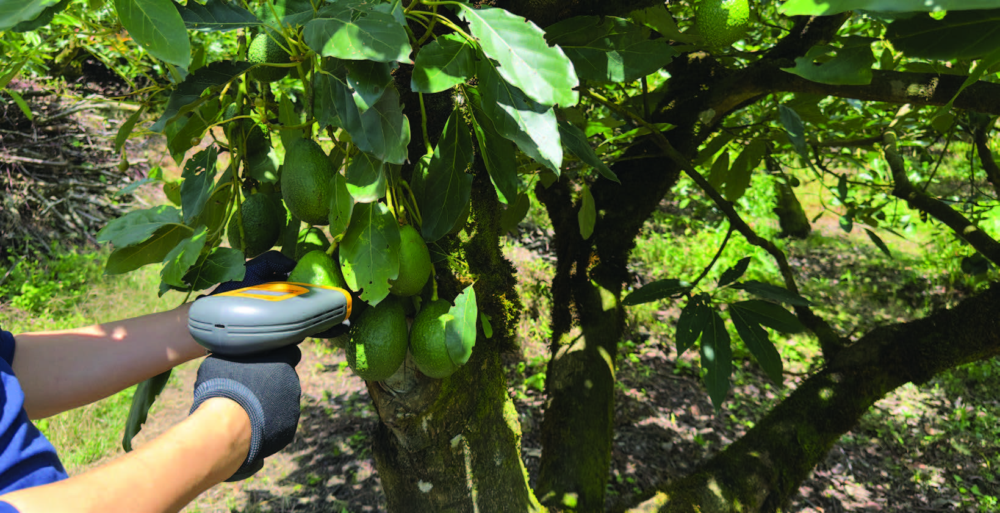
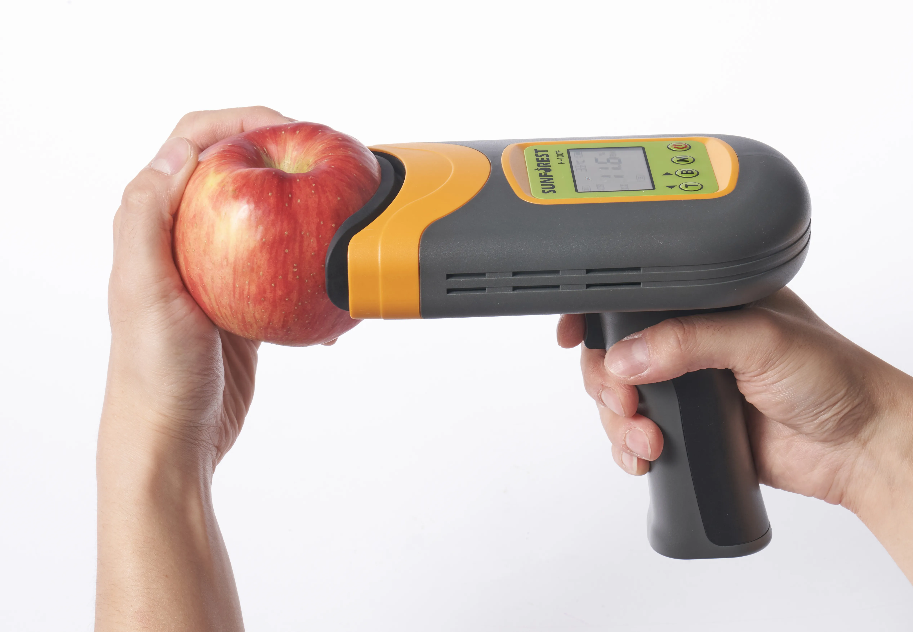
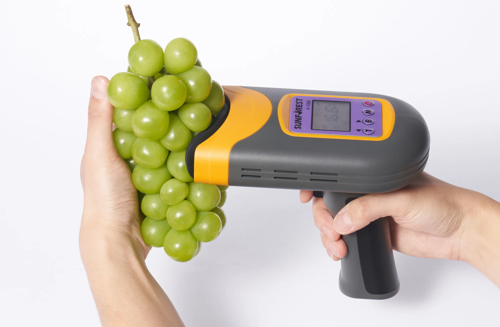
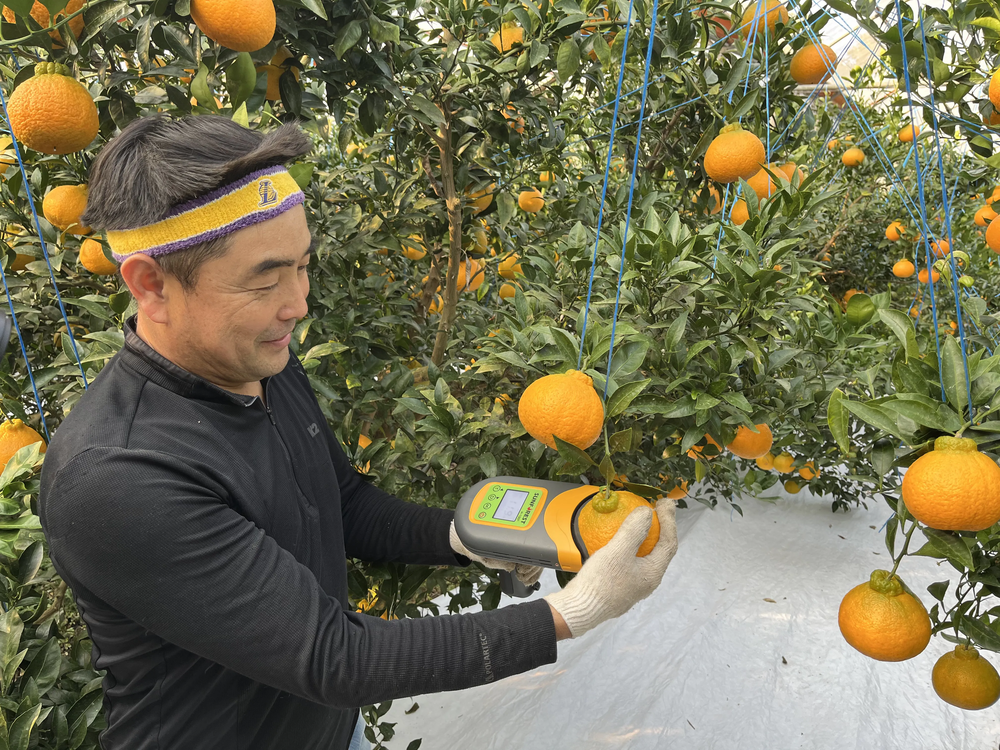

Medición instantánea y no destructiva de la calidad de tu fruta. Materia seca, grados Brix y firmeza en 2 segundos. Del campo a la nube.
Serie H-100
Los medidores SUNFOREST Serie H-100 utilizan espectroscopía NIR para analizar la calidad interna de la fruta de forma instantánea y sin destruirla.
Aguacate, kiwi, mango, cítricos, tomate y más. Mide materia seca (%), grados Brix e índice de firmeza en 2 segundos.
Análisis instantáneo y no destructivo de la calidad interna.
Sincronización automática a la nube. Operación 100% offline.
Cada medición queda georreferenciada con ID de operador.
Solo necesitas un teléfono de gama media.
Cada modelo está calibrado para tipos específicos de fruta. Uno solo dispositivo admite múltiples variedades.
Manzanas y frutas de pepita. Brix, firmeza y acidez.
Uvas de mesa y vino. Brix preciso para cosecha óptima.
Maíz y cereales. Humedad y composición interna.

En Acción
Medición no destructiva en más de 40 variedades de fruta alrededor del mundo.






Hardware + Software
El dispositivo H-100C captura los datos en campo. La app AgroTrace los centraliza, analiza y convierte en decisiones inteligentes.
Recibe las mediciones vía Bluetooth, captura fotos, videos y notas de voz. Opera 100% offline y sincroniza al recuperar señal.
Visualiza gráficas de materia seca por sector, mapas de calor georreferenciados y semáforos de cosecha en tiempo real.
GPS inmutable, timestamps encriptados e ID de operador. Cumplimiento regulatorio validado antes de la exportación.
¿Por qué elegir AgroTrace?
Vende con certeza. Conoce el Brix real antes de que la fruta salga del campo.
Reduce drásticamente los reclamos por fruta rechazada en destino.
Planifica contenedores basándote en datos reales de madurez.
Control milimétrico por lote sin necesidad de viajar miles de km.
Especificaciones
Resultado instantáneo sin destruir la fruta.
Condiciones extremas de campo.
Jornada completa sin recarga.
Sincronización estable.
Plataforma Inteligente
AgroTrace 360 integra geolocalización, inteligencia artificial y visualización avanzada para una gestión de campo completa.
Contacto
¿Quieres saber más? Contáctanos sin compromiso.
Montera 24, Local 5, Madrid.
Únase a las operaciones que ya confían en AgroTrace + SUNFOREST.
📩 Más Información